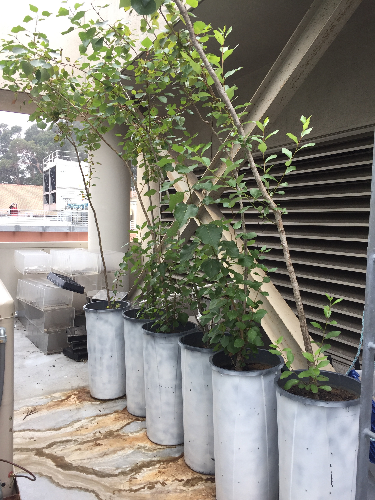
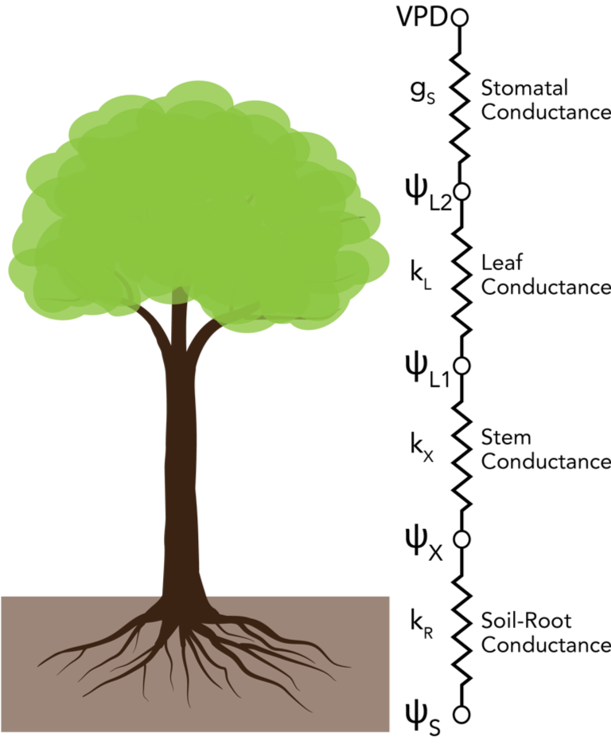
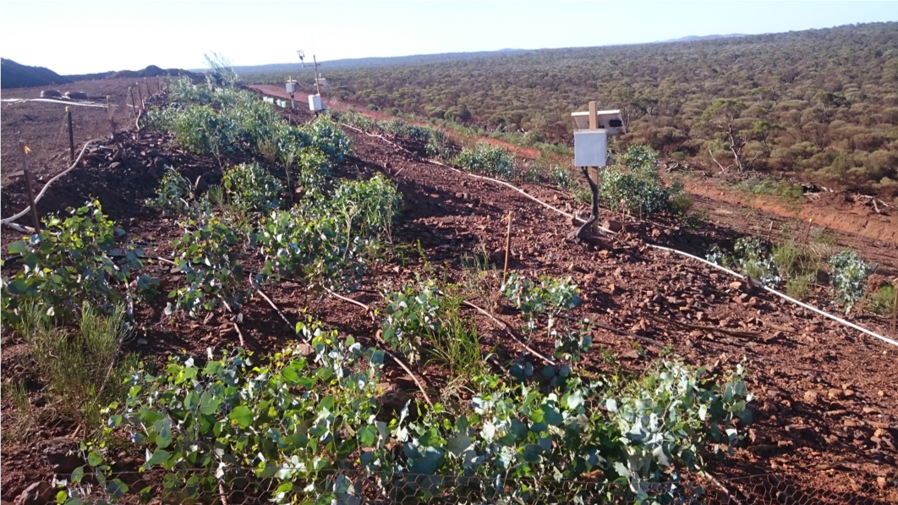
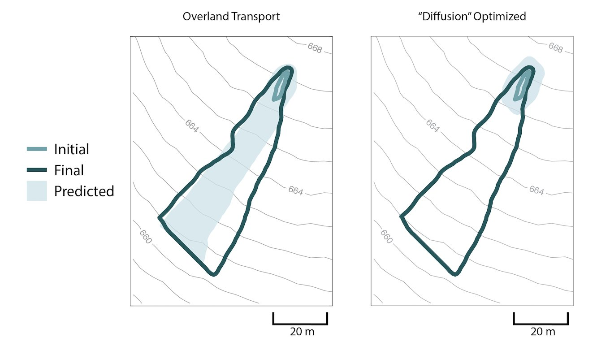

Coordination of Stable Isotopes of Plant Water and Plant Physiological Responses During Water Stress
Populus trichocarpa trees being grown
for the experiment (Image: JV Wilkening)A central challenge in ecohydrology is being able to predict plant water fluxes and how they change in response to environmental conditions. Despite many advances, it remains a challenging pursuit since these water fluxes are ultimately a function of both the environmental conditions and the physiology of the plant and the emerging dyanmics therein. Modeling can be a useful tool for disentangling the driving factors behind plant water use, but there is a lack of detailed datasets that simultaneously measure the both the physical and physiological variables that are needed to really test and validate the model formulations. To help address this need, we conducted an experimental drydown of potted Populus trichocarpa trees during Summer 2021. During the drydown, we measured sap flow, plant water potentials, leaf gas exchange, meteorological conditions, soil moisture, and the isotopic composition of soil and plant water. We also characterized plant morphology, plant vulnerability to embolism, and soil properties. I am currently in the process of analyzing samples and processing the data, so please stay tuned for further results and publication of this dataset!
Role of Vulnerability Segmentation in Plant Function
The model used in this study represents the soil-plant-atmosphere
continuum as a series of variable resistorsPlants exhibit a great diversity in their vulnerability to drought-induced embolism, usually characterized by the P50 value, which corresponds to the water potential at which there is a 50% loss in conductivity. While there is a wide range of P50 values for plant stems, there is also variation in how the P50 of the stem tissue in a plant corresponds with the P50 of the leaf tissue in the same plant, termed vulnerability segmentation. A hypothesis in plant physiology posits that it can be advantageous to plants to have leaves that are more vulnerable to embolism relative to their stems. This allows the leaves to act as a sort of "safety valve" on the hydraulic system of the plant. However, while some plants do exhibit this pattern of vulnerability segmentation, many show now vulnerabliity segmentation and some even exhibit the reverse, having leaves that are more resistant to embolism relative to their stems. In this work, I am examining how the presence or absence of hydraulic segmentation, along with other hydraulic characteristics, impact plant function under different environmental conditions. To do this, I am using both measurements of hydraulic vulnerability, as well as a plant hydraulic model to understand the implications of hydraulic segmentation under different scenarios. Initial results from this work were presented at the AGU 2020 Fall Meeting (recording of talk available here) and a manuscript is currently in preparation.
Improving Resiliency of Landscape Rehabilitation in Arid Ecosystems
Plants grown on an engineered soil cover at a site in Western Australia as part of experiment
from which data were used to validate model (Image: Sebastian Lamoureux)Evapotranspiration (ET) covers, which consist of an engineered soil layer supporting vegetation, are an increasingly popular rehabilitation tool for former mining and landfill sites. They take advantage of plant water uptake to manage the water balance in the soil cover, limiting deep drainage that could potentially mobilize contaminants and waste products from the prior site operations. However, in arid ecosystems there is the potential that the plant water uptake could be hydraulically limited, possibly increasing the risk of contaminant mobilization and mortality of the vegetation. In this work, I am using a plant hydraulic model to optimize the design of these systems while accounting for hydraulic limitation and variable climatic conditions. Initial results from this work were presented at the AGU 2019 Fall Meeting (slides available here) and a manuscript is currently in preparation.
Role of Hydrologic Mechanisms in Plant Pathogen Spread
Model output showing predicted pathogen spread (light blue shading) from initial observed
patches (light blue line) when accounting for overland transport (left) and without overland
transport (right) as compared to observed spread patterns (dark blue line)I developed a model to predict the biological growth and transport of the plant pathogen Phytophthora cinnamomi at the landscape scale. Using this model and case studies of disease progression in Western Australia and Spain, I investigated the role of overland runoff as a spread mechanism and how simple hydrological analysis can be used to create more quantitative and spatially-explicit management strategies for disease containment. Model code is available on my Github Page and forcing data is available on Hydroshare.
Publications
- Wilkening, J. V., Cardillo, E., Abad, E., & Thompson, S.E. (2021). Saturation excess overland flow accelerates the spread of a generalist soil-borne pathogen. Journal of Hydrology, 593, 125821. Available from publisher here or as final, but unformatted preprint here
Biogeochemical Cycling in Salt Marshes
 In situ sampling of pore fluids from salt marsh pond
In situ sampling of pore fluids from salt marsh pond
in Norfolk, UK (Image: JV Wilkening)During my time at the University of Cambridge, I studied interactions of sulfur, iron, and carbon cycling in salt marshes. As part of this work, I looked at seasonal dynamics of biogeochemical cycling and this work was published in coordination with other work from the Turchyn lab in early 2019. I also studied differences in the formation of volatile organosulfur compound formation between sulfidic and ferruginous sedimentary environments and this work was published in late 2019.
Publications
- Wilkening, J. V., Turchyn, A. V., Redeker, K. R., Mills, J. V., Antler, G., Carrión, O., & Todd, J. D. (2019). The production and fate of volatile organosulfur compounds in sulfidic and ferruginous sediment. Journal of Geophysical Research: Biogeosciences, 124(11), 3390-3402. Available here
- Hutchings, A.M., Antler, G., Wilkening, J.V., Basu, A., Bradbury, H.J., Clegg, J.A., Gorka, M., Lin, C.Y., Mills, J.V., Pellerin, A., Redeker, K.R., Sun, X., & Turchyn, A.V. (2019). Creek dynamics determine pond subsurface geochemical heterogeneity in East Anglian (UK) salt marshes. Frontiers in Earth Science, 7, 41. Available here